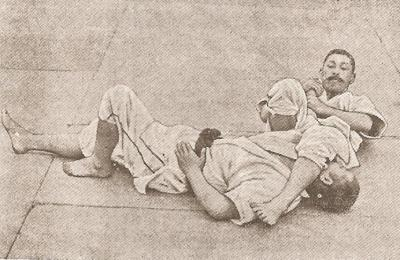
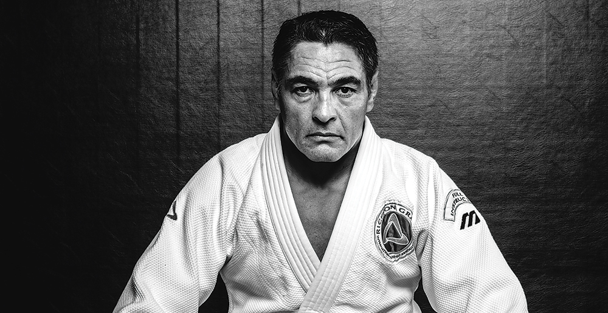

O BJJ
BJJ je bojové umenie založené najmä na boji na zemi. Kde sa bojovník pomocou rôznych pohybov snaží dostať do čo najvýhodnejšej pozície tak, aby mohol využiť rôzne techniky, vďaka ktorým donúti súpera vzdať sa. Medzi tieto techniky patria páky na končatiny a škrtenie.
HISTÓRIA
 História Brazílskeho Jiu-Jitsu začala v roku 1917, keď Japonec menom Mitsuyo Maeda prišiel do brazílskeho štátu Para, za účelom založenia japonskej kolónie. Gustao Gracie bol v tom čase politická osoba a Maedovi niekoľkokrát pomohol. Maeda mu ako dôkaz vďaky a priateľstva ponúkol, že bude jeho syna Carlosa učiť japonský štýl boja Jiu-jitsu. Maeda bol v tomto boji japonským šampiónom a aj keď učenie Jiu-jitsu mimo Japonska bolo prísne zakázané, Maeda tomu nekládol veľký doraz, kvôli malému vzrastu Gustovho syna. Vtedy ešte nemohol tušiť, že Carlos za niekoľko rokov vytvorí úplne nový bojový štýl – Brazílske Jiu-Jitsu. Maeda Carlosa trénoval sedem rokov, potom však musel odísť naspäť do Japonska. Carlos nevedel, čo s nadobudnutými vedomosťami robiť a tak pokračoval vo svojom tréningu i v zdokonaľovaní techník. Neskôr zobral pod svoje krídla i mladšieho brata Hélia a spolu odišli do Ria de Janeira, kde Carlos založil prvú akadémiu brazílskeho Jiu-Jitsu na svete.
 K ďalšiemu vývoju Brazílskeho Jiu-Jitsu (BJJ) prispel Helio, ktorý zdokonaľovaniu tohto umenia venoval 40 rokov svojho života. Helio kvôli svojmu malému vzrastu nemal dovolené zúčastňovať sa tréningov, a tak sedel v rohu a každý tréning sledoval. Jedného dňa, keď Carlos meškal na tréning, Helio nechcene odučil celú hodinu. Klient Héliovi ponúkol, či si nezacvičia spolu. Keď Carlos s ospravedlnením dorazil, spokojný klient chcel za trénera mladého Helia. Helio chcel Carlosa so svojími novými poznatkami oboznámiť, Carlos však o jeho technikách pochyboval. Helio preto vyzval ospevovaného Carlosovho inštruktora a tvrdil, že jeho a ďalších troch porazí do 20 minúť. Výzva bola prijatá. Na druhý deň Helio porazil prvých troch za 7 minút a ďalšieho za 5 minút. Carlos bol prekvapený a konečne uznal svojho brata ako jedného z najlepších inštruktorov v akadémii.
I napriek neustálemu zápaseniu boli bratia Graciovci pre ľudí v Riu viac ako zápasníci. Boli to ochrancovia slabších a tiež hrdinovia, ktorí zachránili topiaceho sa človeka zo žralokmi zaplneného mora, do ktorého sa ani jeden z prizerajúcich nechcel vydať.